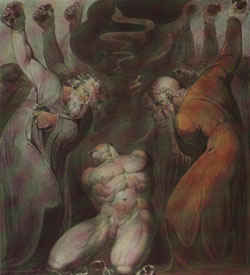

The Historical Construction of The Bibleamerican law and the bible's claim to divinityHaving been founded by immigrant Christians, the United States of America has always held a special sentimentality and even superstitious awe for the religion of its forefathers and for its sacred book, the Bible. Thus even in an era marked by open debate, cultural pluralism, and a worldview heavily infused by scientific reasoning and realities, many Americans still look to the Bible, not only for personal guidance but for the guidance of American society as a whole—even to the point of believing U.S. laws (which affect Americans of all religious backgrounds) should be based upon Christian religious doctrine. Indeed, Christian Fundamentalists and certain other members of the religious right view themselves as engaged in a "culture war", in which they (the forces of Good) war with the forces of Satan who are trying to wrest American society away from traditional Christian beliefs.At the center of the conflict is the mythology of the Bible as the literal word of God, incapable of erring in any detail—religious or historical. According to this mythology, we have only to read the Bible to know God's will for us. Our sexual conduct is clearly laid out for us. To deviate is to be damned to an eternity of suffering, and to allow others to deviate (i.e. by repealing laws against oral sex, anal sex, homosexuality, etc.) is to condone a lifestyle that leads inevitably to hell. In short, such religious hardliners ask that we turn off our own power of reason, blot out our own personal sensitivities, and blindly follow the Bible's instruction. Yet, even if one is a Christian willing to turn one's will and one's life over to the care of a higher power, and laying aside, for the moment, the thorny issue of interpreting the Bible's blue print for us (hardly a small matter), there still remains a fundamental flaw in this injunction: Is the text of the Bible truly inviolate? That is, is the Bible truly the direct word of God, uncorrupted by the prejudices and political ambitions of the countless individuals entrusted with its transcription, copying and recopying, translation and retranslation? To answer this question, let us take a look at the Bible's own history. Behind the mythology of a perfect and inviolate holy book, dictated by God to man via Moses and the Apostles and flawlessly handed down, untouched, throughout the centuries, let us consider the real evidence accumulated by historians and religious scholars. Historians accept the idea that the Bible is in fact a composite work—that is, it is not the untouched work of a few men. In actuality it has been added to and subtracted from and otherwise altered over the many centuries of its construction. And while many religious scholars are quick to point out that that this is irrelevant, that nothing has ever been added or omitted that God himself did not cause to have so done, the fact remains that in our modern era this history of changes and omissions has led not to one version of the Bible, but to many. Which then is accurate? And how can we know that what we have now accurately reflects the original Gospel of Christ?
Amidst all this comes the question: is this enough? Can we assume that this new and improved Bible with its fresh and authoritative translations, its scholarly interpretations of antique idioms, is correct? Can we now turn to the NIV and say, "At last we have the truth"? Of course not. Certainly earlier mistranslations of the Bible's text over time have been a significant source of variation and error. And it is also an established fact that additional discrepancies were introduced through scribal error (remember that before the invention of the printing press, all manuscripts were copied by hand) as well as through linguistic error (that is, from not understanding the idioms, or turns of phrase, used in the original language. Intentional errors all crept in, due to the philosophical or political slant of the translators themselves. Such variances are significant. And in many cases, a fresh translation such as the NIV can certainly remove many of them. But what such a translation cannot repair revolves around a much greater problem—the insertion and deletion of various texts. Certainly some simply fell prey to accident and decay. But others were deleted for political motives or intellectual prejudice. Some of these texts are once again available to us, but how many remain hidden away or lost to us entirely we may never know. Complicating matters is that in other cases, texts were retained and elevated to spiritual law, despite their questionable origins and their apparent conflict with the teachings of the Gospel. The result, inevitably, is that the Bible, as we know it today, hosts a rather confused, convoluted, and questionable message—or body of messages. It is riddled with inconsistencies and incongruities. And yet, because of its long association with American society, and because many Americans today are still brought up to fear and love the Bible as the legitimate Word of God, the text of the Bible is still used to condemn anything that historical Christianity (for reasons often political rather than spiritual) also chose to condemn. Faced with those ever eager to nudge us backward to the good ole days (when one could freely use the Bible to justify persecution and repression), it is important therefore that we understand exactly where the Bible's mixed message came from, how it was accreted or created, and how modern individuals can evaluate conflicting claims of law and divine inspiration.
|
 To those raised within a particular Christian faith tradition (Lutheran, Catholic, Eastern Orthodox, Pentecostal), the version of the Bible they grew up with, and the teachings that accompanied it are the one true Word of God. For hard-core Christian fundamentalists, only the Authorized King James Bible is accurate. Catholics meanwhile find the Authorized KJV unacceptable (as it, for one thing, downplays human free will). Meanwhile, Lutherans point out that both of these books contains texts that shouldn't even be in the Bible! And on it goes. As if all this weren't enough, many modern critics of the Bible reject it as old-fashioned or couched in the rhetoric and bias of centuries past. Hence the creation of the NIV Bible (New International Version), offering a completely new translation from Greek and Hebrew texts, eliminating the biases of the Middle Ages and harking back to the biases of millenia gone by.
To those raised within a particular Christian faith tradition (Lutheran, Catholic, Eastern Orthodox, Pentecostal), the version of the Bible they grew up with, and the teachings that accompanied it are the one true Word of God. For hard-core Christian fundamentalists, only the Authorized King James Bible is accurate. Catholics meanwhile find the Authorized KJV unacceptable (as it, for one thing, downplays human free will). Meanwhile, Lutherans point out that both of these books contains texts that shouldn't even be in the Bible! And on it goes. As if all this weren't enough, many modern critics of the Bible reject it as old-fashioned or couched in the rhetoric and bias of centuries past. Hence the creation of the NIV Bible (New International Version), offering a completely new translation from Greek and Hebrew texts, eliminating the biases of the Middle Ages and harking back to the biases of millenia gone by.